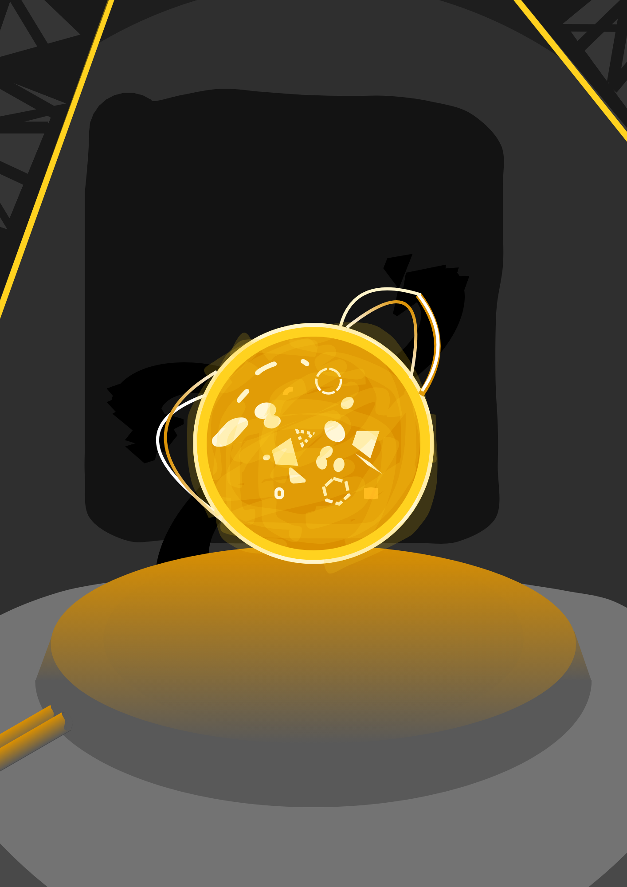
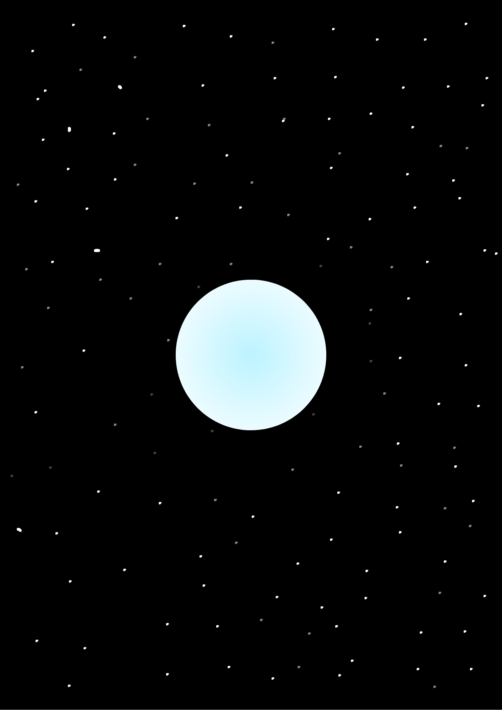
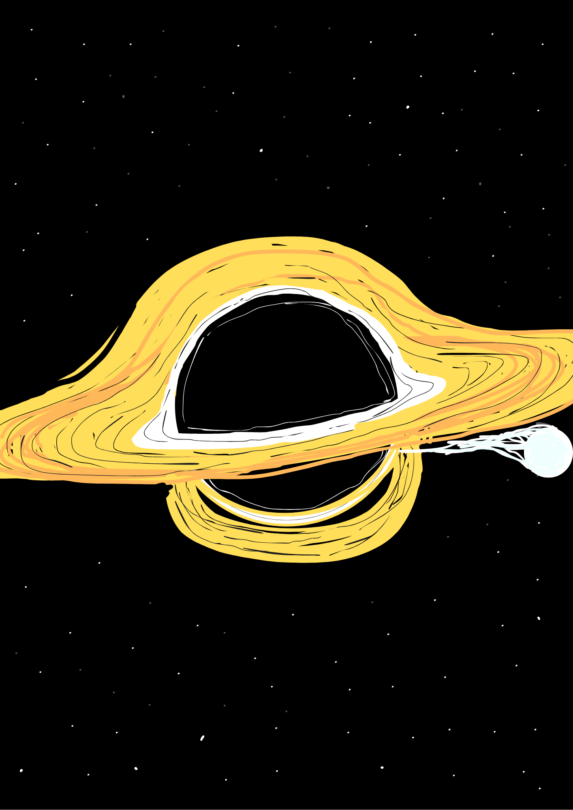

The theoretical possibility of creating stars and utilizing their energy.

Investigation of all possible properties and characteristics.

Investigation of all possible properties and characteristics, and the study of extreme space curvature.


Study of the white dwarf mass limit.
Observation of the disruption of stars by supermassive black holes.